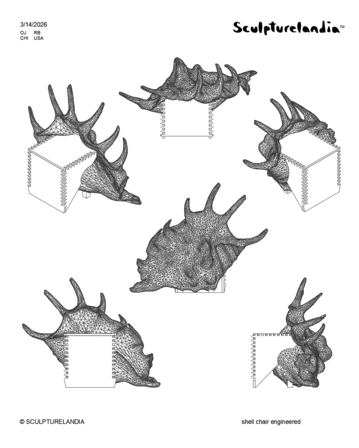

Paradise Lost II: A Conversation between Sculpturelandia and Dennissa Young
Join us for a conversation between Sculpturelandia (Olivia Juarez and Remy Bordas) and Dennissa Young where we talk all about the process in which it took to make Paradise Lost come to life